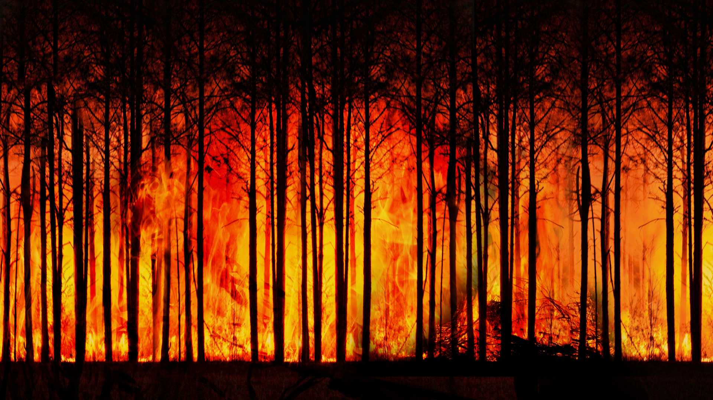

Você sabe quais as consequências que o aquecimento global pode nos trazer?
Tenha consciência e ilumine o mundo. A decisão está também em suas mãos.
O aquecimento global é o aumento da temperatura gerada pela ação humana que quando se apresenta demasiadamente é responsável por criar riscos ao futuro da humanidade.
A poluição das grandes industrias, o desmatamento, a pecuária e a queimada são os principais vilões que danificam o nosso ecossistema ambiental.
É necessário que grande parte da população mundial colabore para frearmos a destruição ecológica, pois certamente impactará na nossa sobrevivência e em muitas espécies de vegetações e animais.
Atualmente as inconveniências podem não estar acontecendo diretamente conosco, mas se não fizermos nada nossos filhos, netos e as futuras gerações seguintes sentirão as consequências.
Nossa mata e vegetação tem um forte poder de transformar o CO2(um composto extremamente responsável pelo aumento da temperatura) em Oxigênio, porém ao desmatarmos estamos eliminando todo o mecanismo responsável pela retirada desse elemento.

As queimadas liberam CO2 assim como os grandes poluentes gerados pelas industrias, esse elemento se eleva para a atmosfera e compromete a camada de Ozônio, uma fonte de proteção fundamental para bloquear raios ultra violetas emitidas pela luz solar(IBF Instituto Brasileiro de Floresta,data indefinida). Desta forma podemos ficar vulneráveis em contrair câncer de pele ao ficarmos expostos a luz do sol por longos períodos. Indivíduos trabalhadores da zona rural devem precaver com mais cuidado em relação a esse perigo.
O CO2 está diretamente ligado ao aumento da temperatura, responsável por destruir nosso ecossistema ambiental. Como consequência, isso pode implicar na extinções de muitas espécies de animais que são sensíveis e intolerantes a alta temperatura, pode também gerar uma falta de água potável nos próximos anos ocasionada pela seca, e ainda é também capaz de promover o derretimento das geleiras contribuindo para o aumento do nível oceânico podendo causar inundações das áreas litorâneas (IBF Instituto Brasileiro de Floresta,data indefinida).
Vale lembrar que a pecuária é também um dos vilões responsáveis pelo aquecimento global. A digestão do gado gera gás metano em seu organismo a qual é liberado no ambiente por meio de arroto ou fezes deste animal. Assim é de extrema importância saber que esse elemento é também responsável por favorecer o aquecimento global ao mesmo nível que o CO2 compromete o meio ambiente(Fogaça, data indefinida).
Para amenizar o impactato que a pecuária traz ao meio ambiente, é fundamental que adote certas contramedidas. Uma delas é evidar a degradação do solo pelos quais os gados se alimentam. Ao deixar os gados livres, o solo se torna infértil, principalmente quando a quantidade de gado ultrapassa a capacidade de carga de pastagem(conhecido como sobrepastoreio)(Ferrarini,2010).
Um meio de evitar este transtorno é criar gados através de confinamentos, a outra maneira é utilizar o sistema silvepastoril, uma combinação de plantar árvores e vegetações no pasto em conjunto com os gados, podendo assim amenizar a degradação do solo(Embrapa Florestas, data indefinida).
Pode parecer absurdo se afirmarmos que a pecuária representa 70 por cento de toda a terra agrícola e 30 por cento da superfície de todo o planeta(Ferrarini,2010). Entretanto são dados reais e originais, agora imagine se todas essas áreas voltadas a pecuária viesse a ter extensas quilometragens de solo degradado. Concerteza seria um ponto negativo ao considerarmos pelos riscos ambientais que podem gerar apartir disso. Portanto dessa forma devemos ser conscientes e nos comprometer em criar soluções para amenizar os impactos causados pela pecuária.
É importante que pense na natureza, evite a queimada, a derrubada de árvores e a pecuária desfreiada sem medidas, essas diferenças podem salvar o futuro das próximas gerações. A decisão está na conscietização do nosso esforço como um todo.
Para mais informações envie um e-mail para: max.ethereal@gmail.com.
Autor da página: Max Alexandre Ken Iti Oda.
Considerações:
Esta página não está associada a nenhuma atividade institucional de proteção ambiental, e nem a qualquer ordem imposta pelo município ou governo.
Não envolve ganhos comerciais.
Esta página está diretamente ligada à uma atividade dos estudantes universitário proposta pela universidade pertencente que tem como finalidade promover a cooperação comunitária envolvendo temas de discussão relacionados a ODS proposto pela ONU.
A participação não é em nenhum momento obrigatória por parte do leitor.
Referências correspondente ao conteúdo:
IBF Instituto Brasileiro de Floresta. AQUECIMENTO GLOBAL:REFLEXO DO DESMATAMENTO. IBF Instituto Brasileiro de Floresta, sem data de publicação.Disponível em : https://www.ibflorestas.org.br/aquecimento-global?utm_source=google-ads&utm_medium=cpc&utm_campaign=nativas-cpa&keyword=efeito%20estufa&creative=367878241909&gad=1&gclid=Cj0KCQjwrMKmBhCJARIsAHuEAPTvFwpoqz2IBtsMoqzVKq6aEXElwDpmqk6CpwNoWtd-coyWrEADrs4aAjfHEALw_wcB
FOGAÇA. Consumo de Carne e Aquecimento Global. uol Mundo Educação, sem data de publicação. Disponível em: https://mundoeducacao.uol.com.br/quimica/consumo-carne-aquecimento-global.htm#:~:text=Estudos%20mostram%20que%20a%20pecu%C3%A1ria,do%20metano%20(CH4)
FERRARINE. O IMPACTO AMBIENTAL ATRIBUIDO À PECUÁRIA.CRMV PR,2010. Disponível em: https://www.crmv-pr.org.br/artigosView/64_O-impacto-ambiental-atribuido-a-pecuaria.html
Embrapa Florestas. Integração Lavoura-Pecuária-Floresta (ILPF).Embrapa, sem data de publicação. Disponível em: https://www.embrapa.br/florestas/transferencia-de-tecnologia/sistema-silvipastoril
Referências correspondente as imagens:
geralt. Sem título.Pixabay, sem data de publicação. Disponível em: https://pixabay.com/pt/illustrations/inc%C3%AAndio-florestal-floresta-3836834/
Pixabay. Sem título.Pixabay, sem data de publicação. Disponível em: https://pixabay.com/pt/photos/ursos-polares-urso-polar-7387841/
Bernhard_Schuermann. Sem título.Pixabay, sem data de publicação. Disponível em: https://pixabay.com/pt/photos/floresta-nascer-do-sol-desmatamento-7794461/
Ralphs_Fotos.Sem título. Pixabay,sem data de publicação. Disponível em: https://pixabay.com/pt/photos/touro-boi-vaca-agricultura-4852778/
StockCake. Unity in Conservation. StockCake, sem data de publicação. Disponível em: https://stockcake.com/i/unity-in-conservation_674663_100416